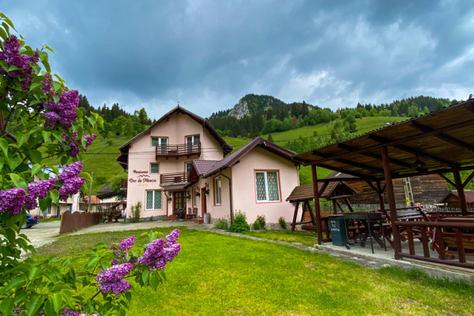
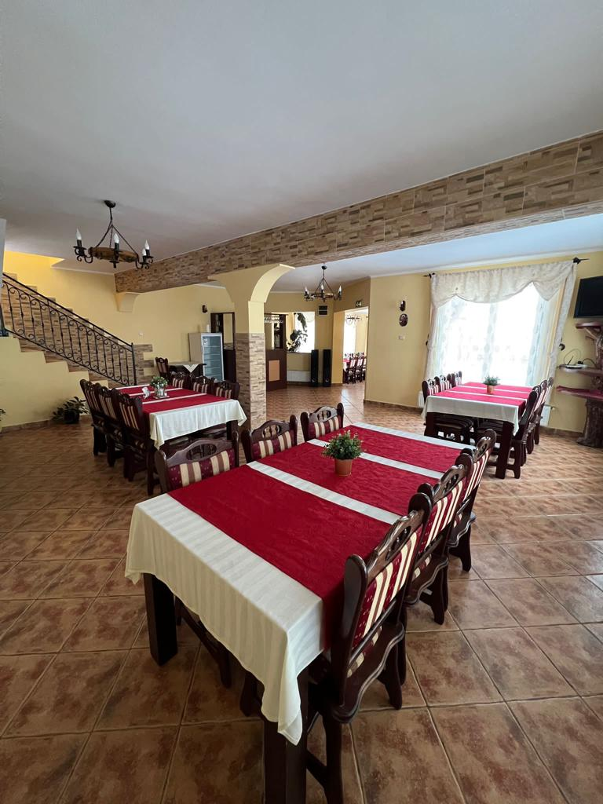

ᨒ↟☼ 𝓟𝓮𝓷𝓼𝓲𝓾𝓷𝓮𝓪☼ ↟↟ᨒᵕ̈

⸙ Dor de Moeciu înseamnă: liniște, peisaje superbe la doi pași de pensiunea unui bucătar cu carieră în ONT-ul de altădată din Poiana Brașov precum si gospodăria țărănească a unui baci autentic care a urcat zeci de ani la stânile din Bucegi. Deci ,,Dor de Moeciu” îndemână dor de frumusețea, curățenia, gustul și poveștile Moeciului de altădată ! ⸙
ᨒ↟↟☼ 𝓛𝓸𝓬𝓾𝓻𝓲𝓵𝓮 𝓭𝓮 𝓻𝓮𝓵𝓪𝔁𝓪𝓻𝓮 𝓮𝔁𝓽𝓮𝓻𝓲𝓸𝓪𝓻𝓮, 𝓭𝓮 𝓹𝓮 𝓵â𝓷𝓰ă 𝓹𝓮𝓷𝓼𝓲𝓾𝓷𝓮 ☼↟↟ᨒᵕ̈

⸙ La foișoare: Intr-un sat turistic aglomerat, pensiunea noastră are destule unghiuri cu peisaje care să vă satisfacă dorul de munte ! Stați cu fața la pensiune vedeți Colțul lui Pițigoi si Coasta Popii ! Dacă vă întoarceți vedeți Dealul Laichii si potecile care urcă la Chiciură ! Hotarul nostru cu drumul este apa Moeciului ! ⸙
ᨒ↟☼ 𝓢𝓪𝓵𝓪 de mese ↟↟ᨒᵕ̈

⸙ La sala de mese:
Aveți spațiu suficient sa veniți cu prietenii pentru o petrecere de neuitat ! Va garantam o bucătarie profesionistă cu tot ce aveți nevoie. Designul sălii nu este chiar de Moeciu :) însă gazdele va garantam ca sunt moeceni din moși strămoși ! ⸙